Türk siyasi aktörlerinin BlueSky platformundaki söylemsel örüntülerinin, doğal dil işleme ve makine öğrenmesi yöntemleriyle çok boyutlu analizi: ağ yapılanması, gönderi hacmi dinamikleri, duygu kutuplaşması ve ideolojik sınıflandırma.
Çalışma beş temel aşama olarak tasarlanmıştır. Her aşamanın çıktısı bir sonrakinin girdisini oluşturmaktadır; veri toplama, metin ön işleme, derin öğrenme tabanlı sınıflandırma, istatistiksel doğrulama ve görsel analiz adımlarını kapsar.
app.bsky.actor.getProfile kullanılarak siyasi hesaplar doğrulandı. DID ve displayName eşleştirmesi yapıldı. 429 rate-limit (istek sınırı) durumları exponential backoff algoritmasıyla yönetildi.getAuthorFeed uç noktasından çekildi. Yanıt (reply) ve alıntı (quote) bağlantıları ağ analizi için ayrıştırıldı.| Dosya Adı | Kaynak ve Yöntem | Veri Boyutu / Kapsam |
|---|---|---|
| verified_accounts.csv | AT Protocol API doğrulaması (manuel kürasyon destekli) | 400+ doğrulanmış hesap, 7 siyasi parti |
| all_posts_raw.jsonl | getAuthorFeed — İmleç tabanlı tam sayfalama | 10.000+ gönderi, yanıt/alıntı ağ verisi |
| weekly_search_results.jsonl | searchPosts — 50 siyasi anahtar kelime, 7 günlük periyot | Kelime başına maksimum 500 gönderi |
| sentiment_results.csv | TurkishBERTweet-LoRA-SA + LoRA-HS (Batch Inference) | 3 duygu + 2 nefret sınıfı, softmax olasılık skorları |
| network_edges.csv / node_metrics.csv | DID-URI çözümleme, PageRank (alpha=0.85), Louvain topluluk tespiti | Ağırlıklı ve yönlü ağ grafiği |
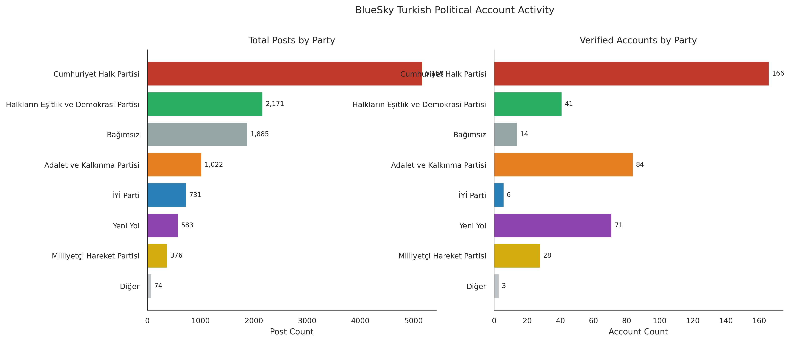
G1_party_post_counts.pngapp.bsky.actor.getProfile üzerinden yapılmış; HTTP 429 hata kodları (rate-limit) 10 saniyelik bekleme süreleri ve maksimum 3 tekrar denemesi (retry) ile aşılmıştır. Gönderi sayıları all_posts_raw.jsonl veri setinden derlenmiştir.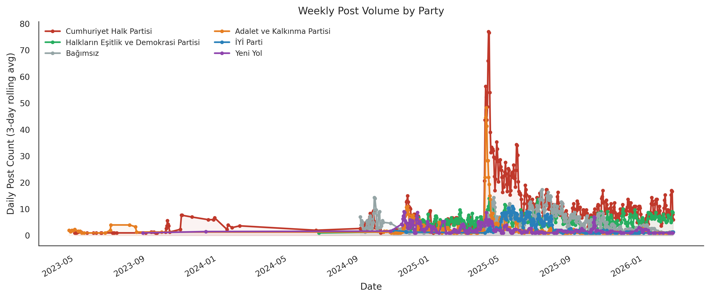
G2_weekly_post_volume.pngrolling(3).mean().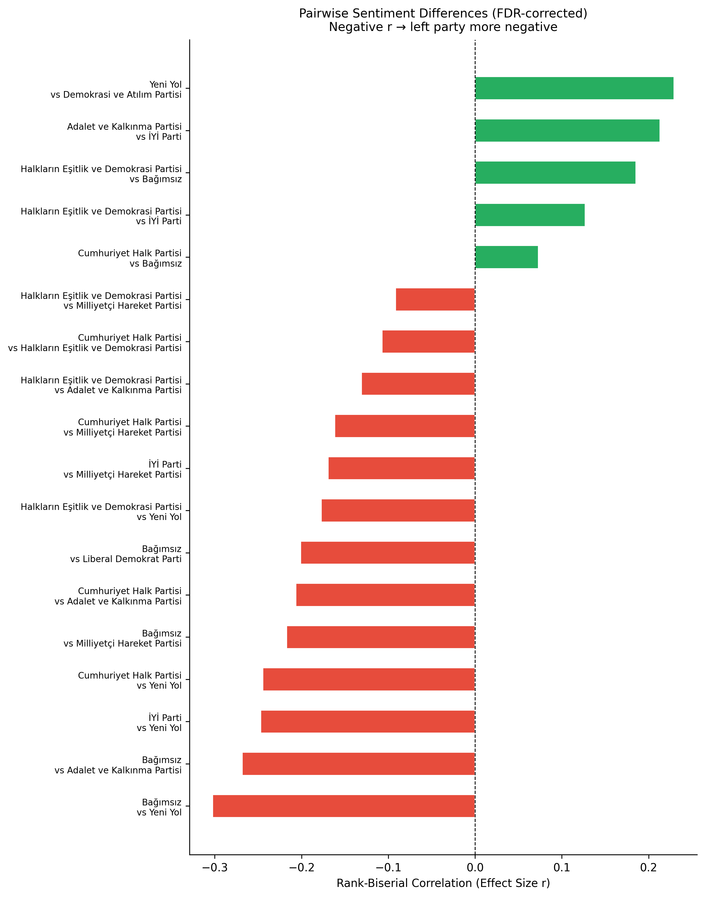
G_statistical_forest_plot.png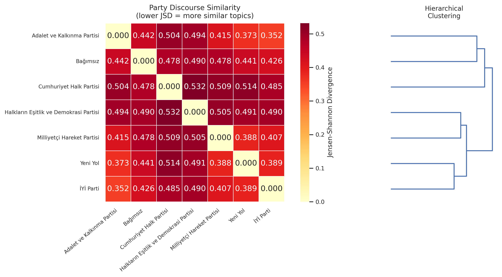
G_LDA_topic_similarity.png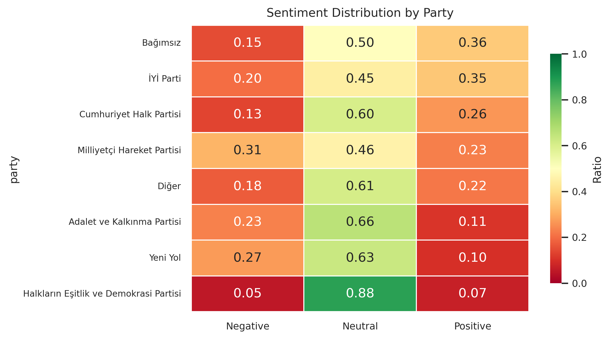
G3_sentiment_heatmap.png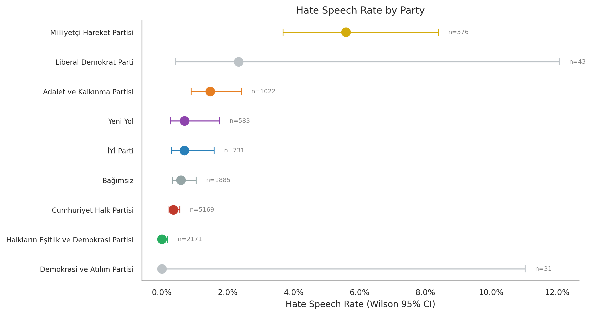
G4_hate_speech_rate.png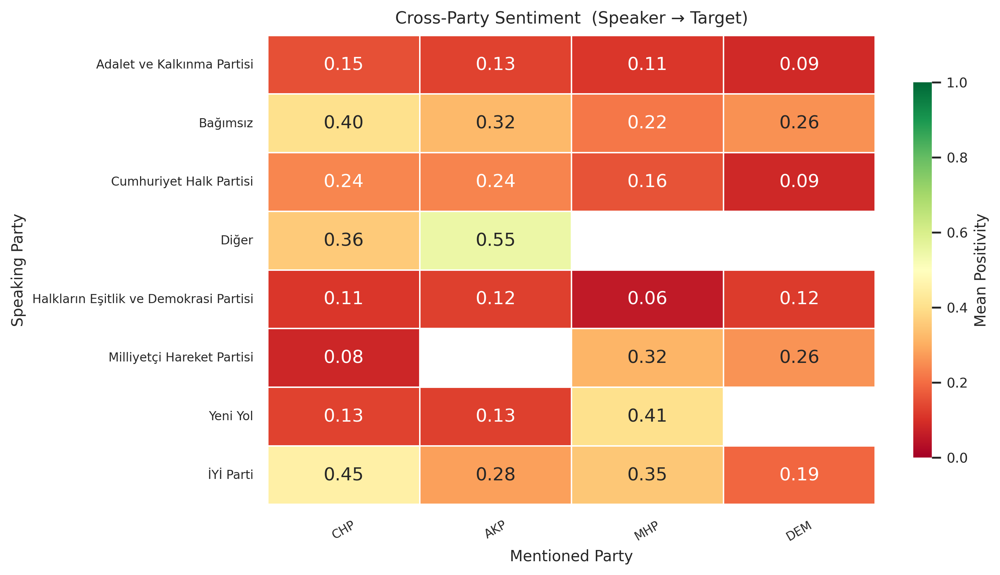
G5_cross_party_sentiment.pngPARTY_KEYWORDS sözlüğü ile taranmıştır. Bir parti ismi geçen gönderiler filtrelenmiş ve modelin "Pozitif" sınıfı için ürettiği softmax olasılıkları, konuşan parti bazında toplanıp ortalaması alınmıştır.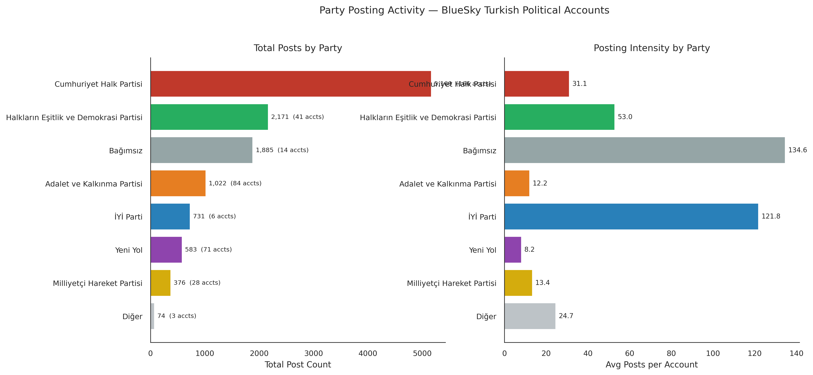
G7_party_activity.png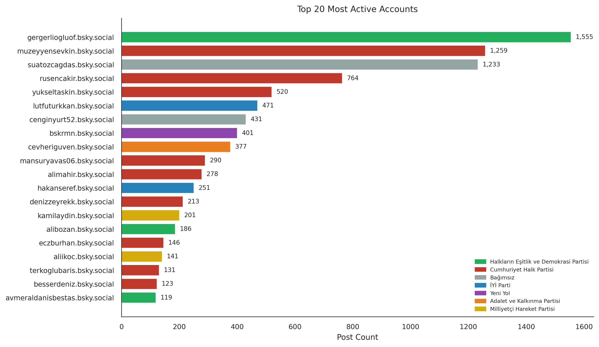
G7_top_active_accounts.png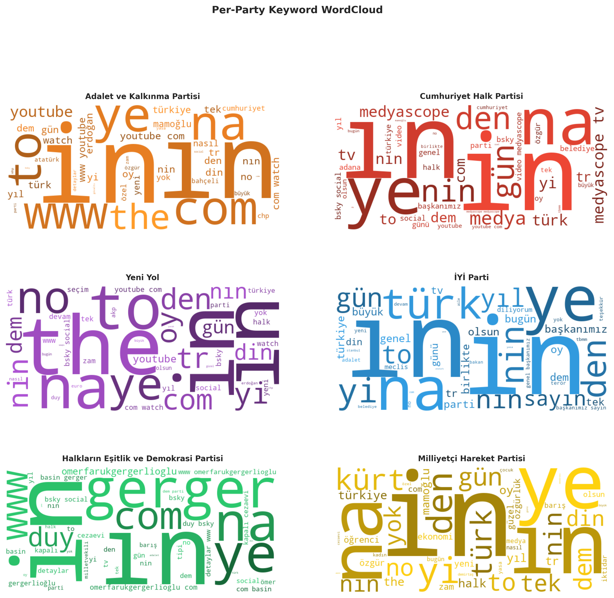
G8_wordclouds.png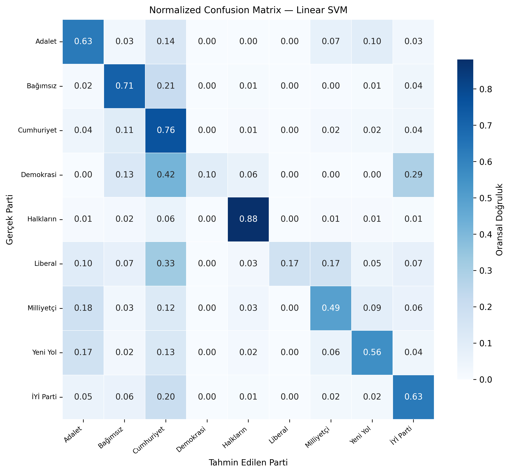
ideology_confusion_matrix.pngSelectKBest algoritması ile en etkili özellikler seçilmiştir.